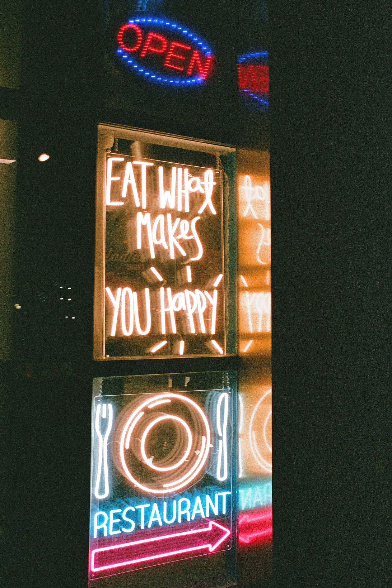

Casa Lume — the script that had to grow
The brief
Casa Lume, a forty-seat restaurant in Leeds, brought a finished script logo from their designer — the word Lume, beautiful, flowing, and drawn at 140 mm letter height for the front window. They wanted it bent as drawn, in ruby red, before their winter opening.
The decisions
Table B2 is not negotiable: script on 10 mm tube needs 160 mm minimum before the letters stay legible, and 140 mm of script reads as lace by Christmas. The word was re-patterned at 240 mm — the pattern on the bench page is this file’s pattern, HTW-P-014 — and moved off the glass onto the brick pier beside the window, where the bigger word had room to breathe. Two bends broke at the flame, both on the L loop; both sat inside the 7% breakage allowance agreed before the deposit.
The outcome
Installed over two evenings so the restaurant never lost a service. The owners kept their designer’s letterforms — every curve is theirs; the bench changed only the size and the wall. Their words on the piece are on the bench page, attached to this file.
